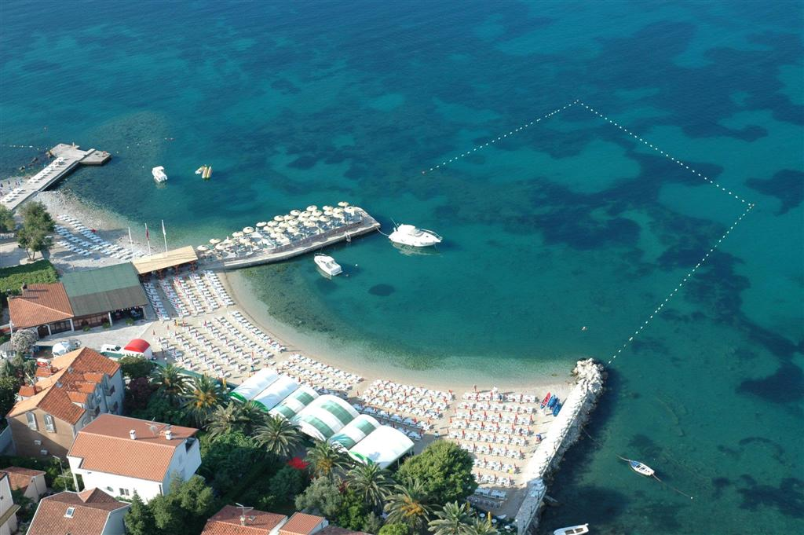
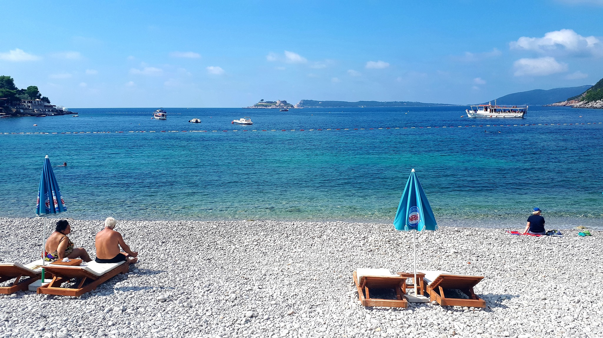
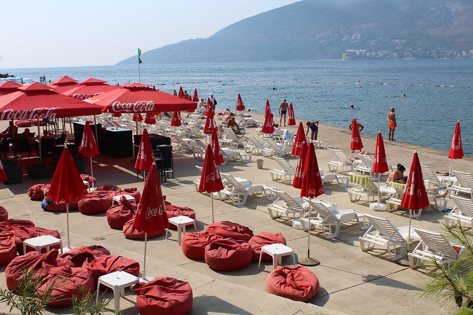
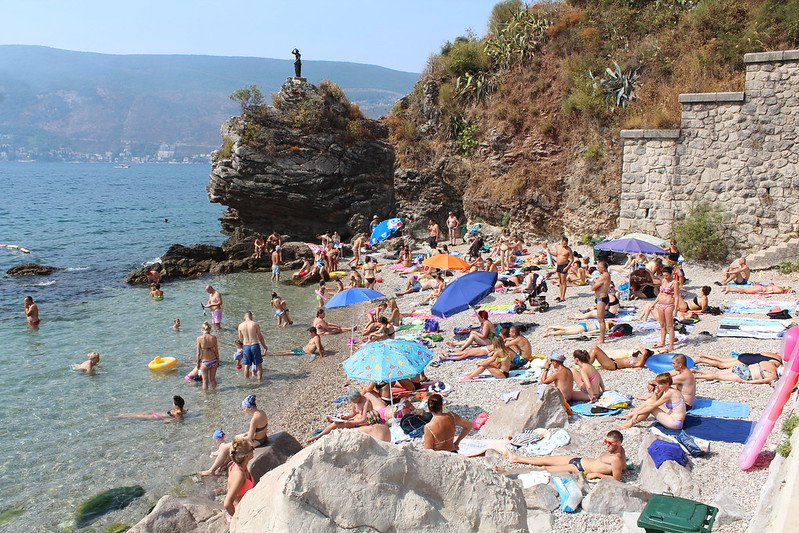
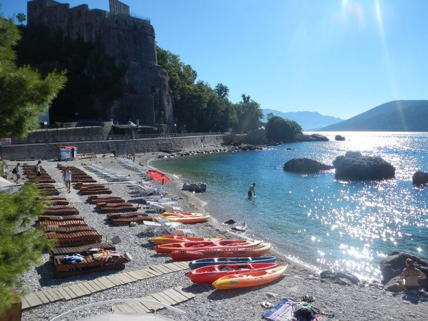

Updated: May 2026
7 min read
8 beaches · 62 registered along 25 km of coast
Beaches of Herceg Novi and Igalo, Montenegro
Sandy, pebble, rocky or perhaps concrete — whatever kind of beach you're
after, you'll find it here. Igalo is known primarily as a tourist town,
and thanks to the therapeutic sea mud at the Mud Beach it has become
the centre of health tourism in Montenegro. Along the promenade,
cafés and restaurants entice you with the smell of grilled fish, good
music and a relaxed atmosphere.
The Municipality of Herceg Novi
has 25 km of coastline and 62 registered
beaches — one of the reasons it's one of the most popular resort
areas in Montenegro. From small, hidden coves among the rocks to large
organised beaches with sunbeds and umbrellas.
In the summer months (July, August) the town gets around
10.7 hours of sunshine a day. Sea temperature near
Herceg Novi in summer ranges from 22 to 26°C, and with
similarly warm air temperatures, the swimming season can last up to
5 months.
We've picked eight beaches we think are the most interesting and
beautiful in Igalo and Herceg Novi — from the healing mud of Blatna
Plaža to the crystal-clear waters of Žanjice.
1
Blatna Plaža (Mud Beach) Igalo
Sandy · Therapeutic★ Recommended for FamiliesPublic Beach
Blatna Plaža (the "Mud Beach") is the largest beach in the
Herceg Novi area (9,000 m²) and the only one in Montenegro
known for its therapeutic radioactive sea mud. It's located in Igalo,
next to the Sutorina river, about 3 km from central Herceg Novi.
Entry is free and the mud therapy is available to
everyone — particularly beneficial for rheumatism and musculoskeletal
conditions.
The beach is shallow and ideal for playing with children. The
medicinal properties of the Igalo mud were confirmed by the famous
Vichy spa laboratory back in 1930. The Institut Dr
Simo Milošević, a restaurant and cafés are all nearby.
9,000 m²Igalo, ~3 km from Herceg NoviFree mud therapySunbeds, bar, parking
Widely considered the most attractive beach in Herceg
Novi. Located on the border between Herceg Novi and Igalo,
in the part of town called Topla — its actual name, as opposed to
the more commonly known commercial name "Raffaello."
A sandy beach covering 3,000 m², with a gentle
entry into the water. Cafés and restaurants line the shore, and
sunbeds and umbrellas can be rented.
3,000 m²Topla, Herceg NoviSunbeds, umbrellas, cafés

3
La Bamba Igalo
Concrete · OrganisedWatersports
A large beach on the border of Igalo and Herceg Novi, in one of the
busiest sections of the coast. Well organised with tidy infrastructure,
though water entry is immediate — you step straight into depth
(around 1 m) from a concrete slab, so it's not the best choice for
young children.
Features a mini water park along with rentals for
jet skis, pedal boats and other watersports equipment. A café is
located within the beach area.
Jet skis, pedal boats, water parkImmediate depth at entry — mind young children
4
Žanjice Beach
Pebble · Natural★ One of the Most Beautiful in the Bay
Žanjice Beach is considered one of the most beautiful beaches
in the Bay of Kotor. Located on the Luštica peninsula, on the
other side of the entrance to the bay. A 300-metre pebble
beach with a gentle entry into the water, crystal-clear
water and stunning views of Mamula Island.
Immediately behind the beach are olive groves that provide
natural shade even during the hottest part of the day — a
rare luxury on the Adriatic. Nearby is the beach at Mirište Bay,
partly sandy and partly concrete.
The easiest way to get there is by boat from Herceg
Novi (about 4 nautical miles, return ticket ~€10). By land,
you'd need to go through Tivat, Krašić and Radovići, a considerably
longer route.
300 m of pebble~4 nautical miles by boat · ~€10 returnViews of Mamula Island

5
Topla Beach
Sand & ConcreteCity Beach
A city beach within walking distance of the bus station and the
main entertainment district. Made up of several smaller sections —
a combination of sand and concrete, partly owned by a hotel.
Infrastructure is complete: sunbeds, umbrellas, changing rooms,
showers, toilets, lifeguard service, a marina and catering facilities.
Changing rooms, showers, lifeguardCentral Herceg Novi, walking distance

6
Beach Near the Tunnel
Rocky · IntimateLocal Favourite
One of the favourite beaches among Herceg Novi locals. Tucked into
a small cove on the pedestrian section of the coast, just past the
tunnel near the museum entrance — which is how it got its name.
A beach bar is nearby.
Although rocky, it's comfortable for lying down and sunbathing.
Water entry is gentle, making it suitable for families with
children too. A great choice for those seeking a quiet, low-key
corner away from the crowds.

7
Žalo Beach
Rocky · Public★ Historic Location
Žalo Beach sits on Škver, opposite the city port on its eastern
side — the heart of old Herceg Novi. It's surrounded by historic
landmarks: the monumental King Tvrtko monument,
the city cannon, the Pet Danica promenade, and the
Forte Mare fortress that literally watches over
the beach.
The beach is public and free, though relatively small. Swimming
at Žalo feels like something of a privilege — you're immersed in
the sea while surrounded by centuries of history. Worth a visit
at least once during your stay.

8
Yachting Club & Hotel Plaza Beach
Concrete & SandWatersports
Near the city port are two well-equipped bathing areas. The
Yachting Club beach is open to all tourists and
residents — a mix of concrete and sand with a complete range of
services, plus a restaurant and pizzeria. Ideal for sea lovers:
offers jet ski rental, a diving school and bicycle hire.
Within the Hotel Plaza is a well-maintained
bathing area covering 3,600 m² with its own beach
bar.
Jet skis, diving, bicyclesHotel Plaza: 3,600 m² bathing area
Practical Information & Prices 2026
The currency in Montenegro is the euro. Here are approximate current
prices for Herceg Novi.
The Municipality of Herceg Novi has 62 officially registered
beaches along 25 km of coastline — one of the main reasons
it's one of the most popular resort areas in Montenegro.
Žanjice Beach is considered one of the most
beautiful in the Bay of Kotor — 300 m of pebble beach, crystal-clear
water and views of Mamula Island. Raffaello Beach
(Topla) is regarded as the most attractive city beach.
Blatna Plaža is unique for its therapeutic mud.
Sea temperature around Herceg Novi in summer ranges from
22 to 26°C. The town gets around 10.7 hours of
sunshine daily in July and August, and the swimming season lasts
up to 5 months.
The easiest way is by boat from Herceg Novi —
about 4 nautical miles, with regular tourist boat services running
in summer. By road you'd need to go via Tivat, Krašić and Radovići,
which takes considerably longer.